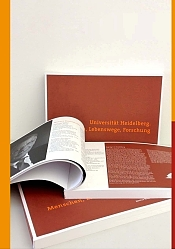

Heidelberger Jahrbücher
Die Gesellschaft der Freunde ist Herausgeber der traditionsreichen Schriftenreihe Heidelberger Jahrbücher. Die Publikation wurde 1807 von Heidelberger Professoren unter dem Namen Heidelbergische Jahrbücher der Literatur begründet und hat eine wechselvolle, durch zwei Weltkriege unterbrochene Geschichte hinter sich.
Seit 2016 erscheinen die Jahrbücher als „Heidelberger Jahrbücher Online“ bei Heidelberg University Publishing (heiUP): elektronisch, frei zugänglich, bei Bedarf auch als Print-on-demand. Der erste Online-Band trägt den Titel Stabilität im Wandel.

Porträtband „Universität Heidelberg. Menschen, Lebenswege, Forschung“
Im letzten gedruckten Band 55 stellen sich fast 100 aktive Heidelberger Wissenschaftler:innen in kurzen, persönlichen Porträts vor. Erhältlich für 18,70 € im Buchhandel oder in der Geschäftsstelle; Mitglieder erhalten auf Anfrage ein Exemplar kostenlos.
Bandthemen früherer Jahre
Rausch (1999), Kreativität (2000), Milieu+Vererbung (2001), WahnWeltBild (2002), Weltbilder (2003), Konflikt (2004), Bildung und Wissenschaft (2005), Gesundheit (2006), 200 Jahre Heidelberger Romantik (2007), Überzeugungsstrategien (2008), Sprache (2009). Die Ausgaben 1999 bis 2006 sind online über die Universitätsbibliothek verfügbar.